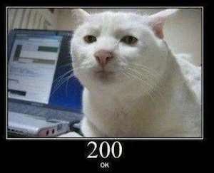
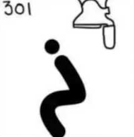
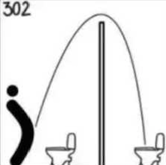
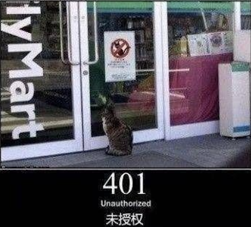
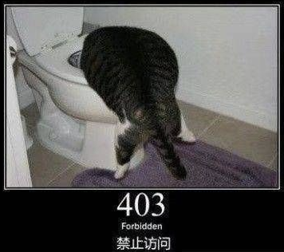
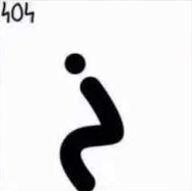
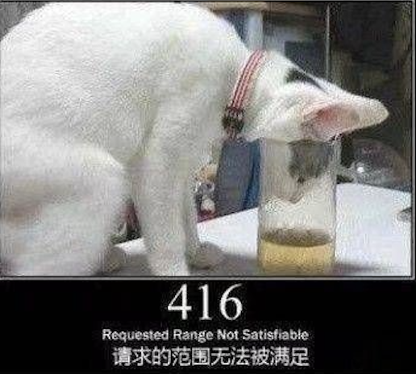

HTTP状态码
本文最后更新于 2023年4月15日 下午
HTTP状态码被分成了5大类。本文对每一类常见的状态码进行总结。
列出的是HTTP/1.1规范推荐使用的原因短语。
100~199 信息性状态码
| 状态码 | 原因短语 | 描述 | (图文无关) |
|---|---|---|---|
| 100 | Continue | 说明收到了请求的初始部分，请客户端继续。 | |
| 101 | Switching Protocols | 说明服务器正在根据客户端的指定，将协议切换成Update首部所列的协议 | * |
200~299 成功状态码
| 状态码 | 原因短语 | 描述 | (图文无关) |
|---|---|---|---|
| 200 | OK | OK |  |
| 201 | Created | * | |
| 202 | Accepted | * | |
| 203 | Non-Authoritative Information | * | |
| 204 | No Content | * | |
| 205 | Reset Content | * | |
| 206 | Partical Content | * |
300~399 重定向状态码
| 状态码 | 原因短语 | 描述 | (图文无关) |
|---|---|---|---|
| 300 | Multiple Choices | 客户端请求一个实际指向多个资源的URL时会返回这个状态码，比如服务器上有某个HTML文档的英语和法语版本。服务器可以在location首部包含首选URL。 | |
| 301 | Moved Permanently | 在请求的URL已被移除时使用。响应的Location首部中应该包含资源现在所处的URL。 |  |
| 302 | Found | 与301类似，但客户端应该使用Location首部给出的URL来临时定位资源。 |  |
| 304 | Not Modified | 有条件的首部。如果客户端发起了一个条件GET请求，而最近资源未被修改，就可以用这个状态码来说没资源未被修改。带有这个状态码的响应不应该包含实体的主体部分。 | * |
400~499 客户端错误状态码
| 状态码 | 原因短语 | 描述 | (图文无关) |
|---|---|---|---|
| 400 | Bad Request | 告知客户端发送了一个错误的请求。 | |
| 401 | Unauthorized | 未认证。 |  |
| 403 | Forbidden | 请求被服务器拒绝。 |  |
| 404 | Not Found | 服务器无法找到所请求的URL。 |  |
| 405 | Method Not Allowed | 发起的请求中带有所请求的URL不支持的方法时，使用此状态码。应该在响应中包含Allow首部，以告知客户端对所请求的资源可以使用哪些方法。 | |
| 406 | Not Acceptable | 服务器没有与客户端可接受的URL相匹配的资源时，使用此代码。 | |
| 408 | Request Timeout | 如果客户端完成请求所花的时间太长，服务器可以回送此状态码，并关闭连接。 | |
| 410 | Gone | 与404类似，只是服务器曾经有过此资源。 | |
| 411 | Length Required | 服务器要求Content-Length首部。 | |
| 412 | Precondition Failed | 客户端发起了条件请求，且其中一个条件失败了。 | |
| 415 | Unsupported Media Type | 服务器无法理解或无法支持客户端所发实体的内容类型。 | |
| 416 | Requested Range Not Satisfiable | 请求报文所请求的是指定资源的某个范围，而此范围无效或无法满足。 |  |
500~599 服务器错误状态码
| 状态码 | 原因短语 | 描述 | (图文无关) |
|---|---|---|---|
| 500 | Internal Server Error | 服务器遇到一个妨碍它为请求提供服务的错误 | |
| 501 | Not Implement | 客户端发起的请求超过服务器能力范围 | |
| 503 | Service Unavailable | 服务器现在无法为请求提供服务，但将来可以 | |
| 504 | Gateway Timeout | 与408类似，只是这里的响应来自一个网关或代理 | |
| 505 | HTTP Version Not Supported | 服务器收到的请求使用了它无法或不愿支持的协议版本 | * |
HTTP状态码
https://blog.rustfisher.com/Network/http-code/